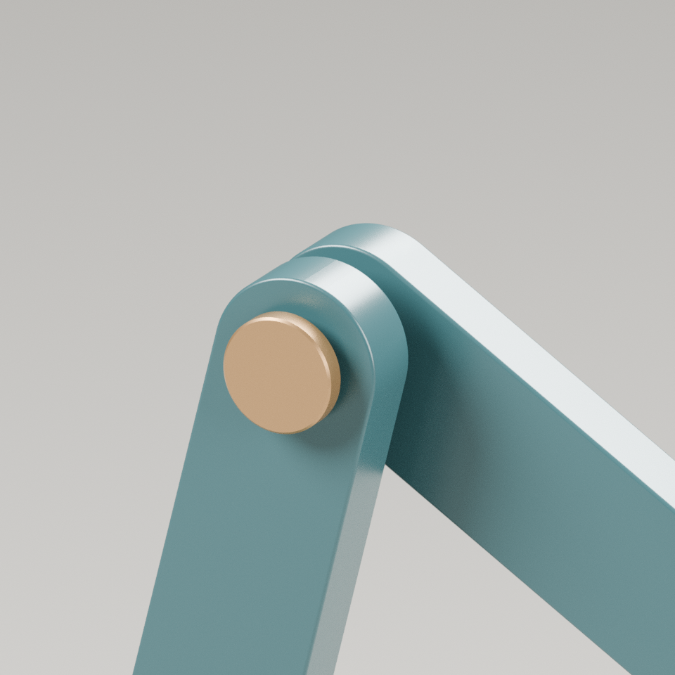
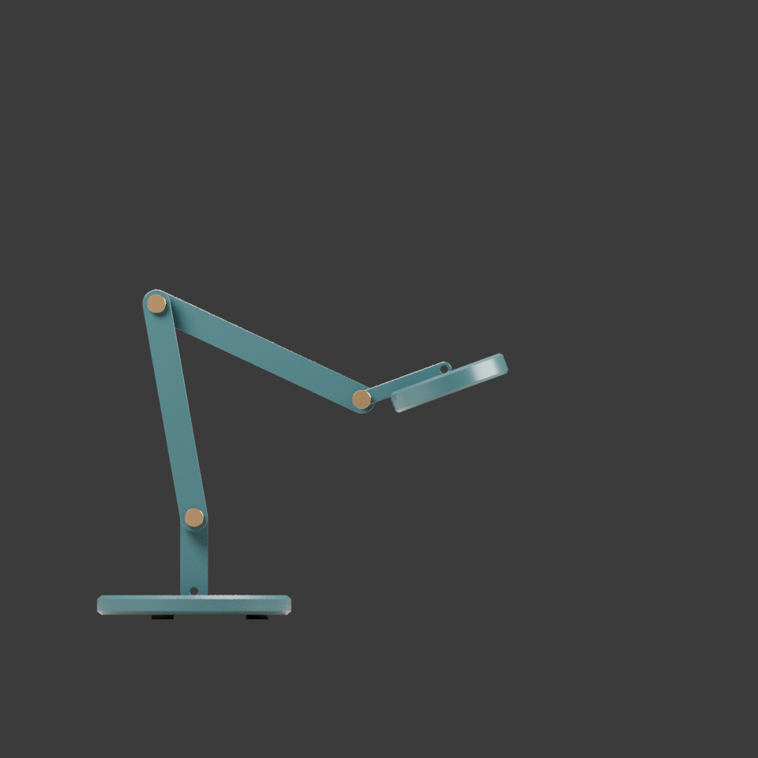
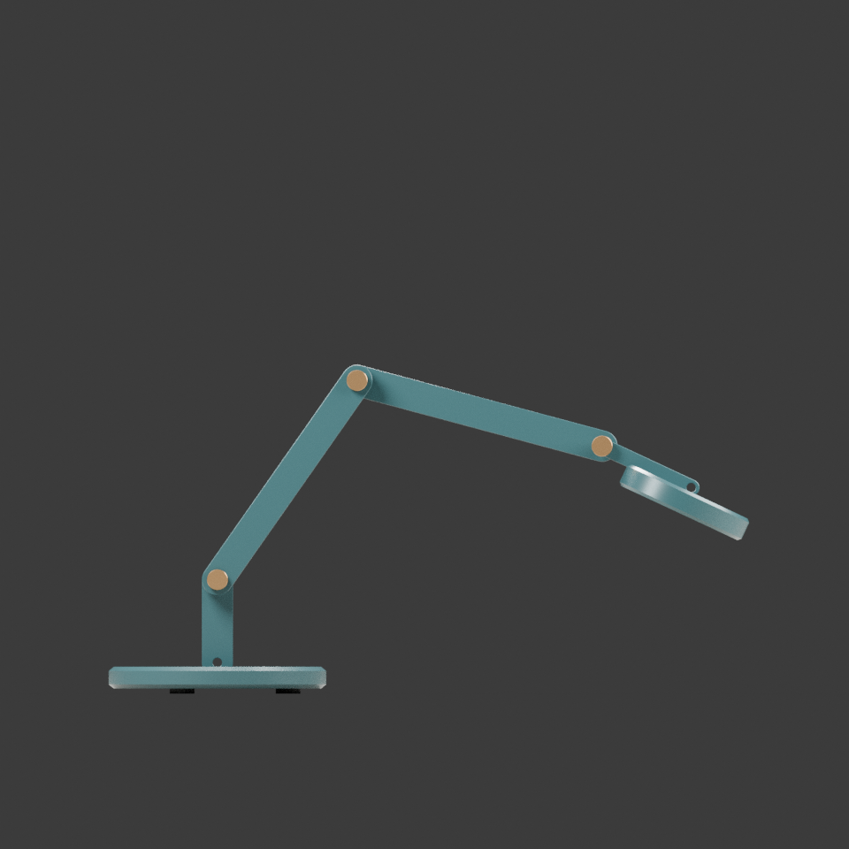
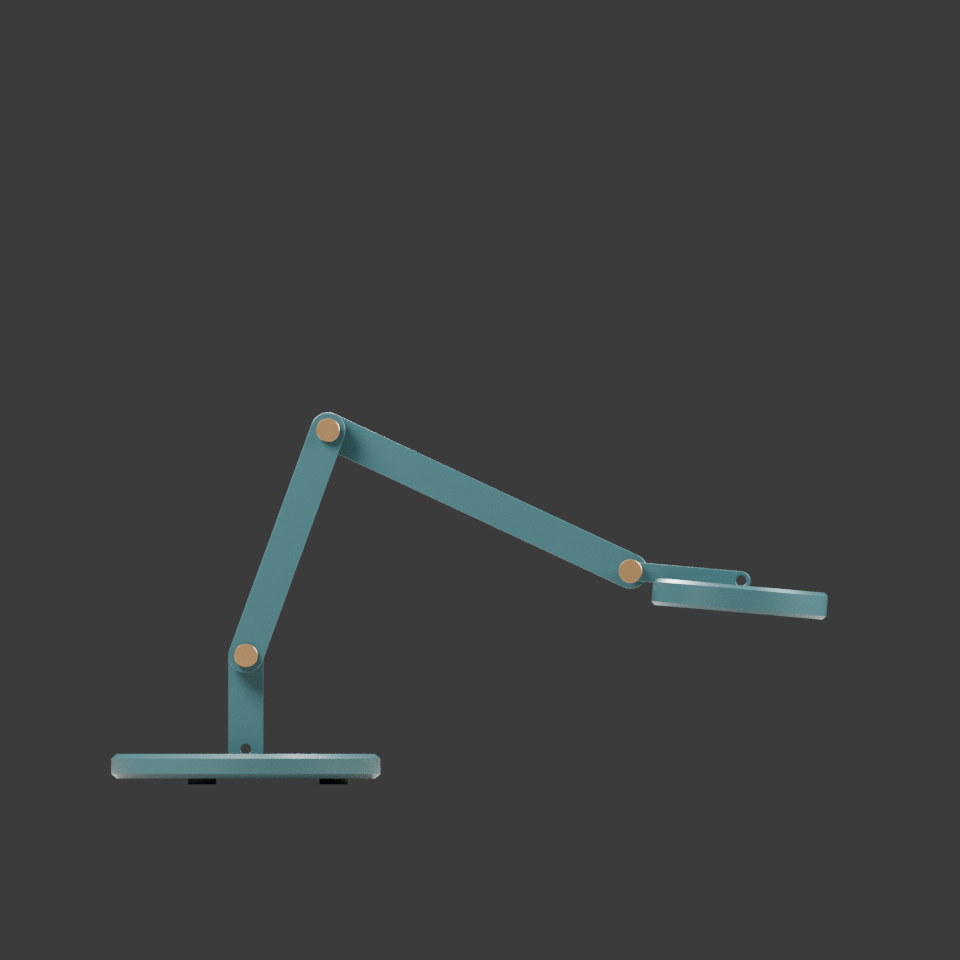
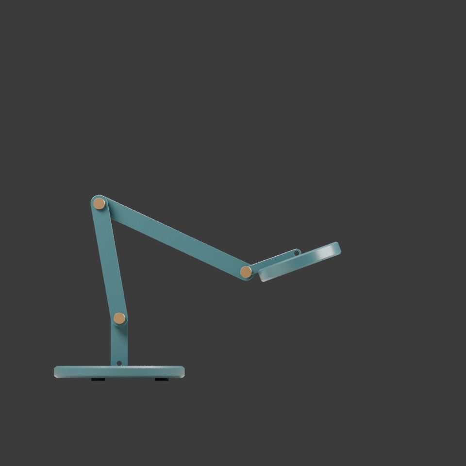
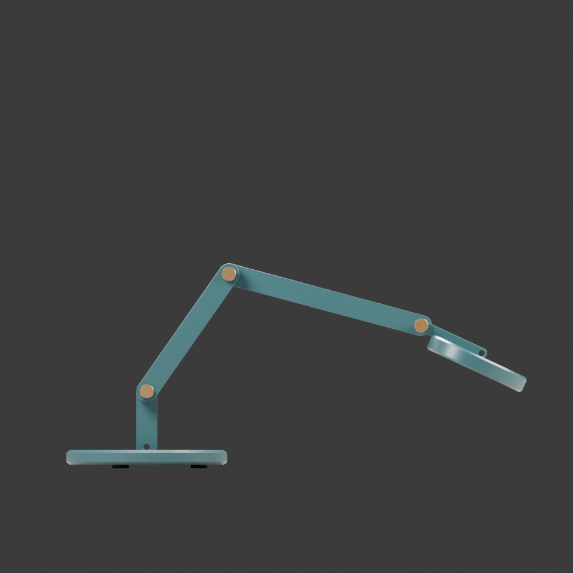
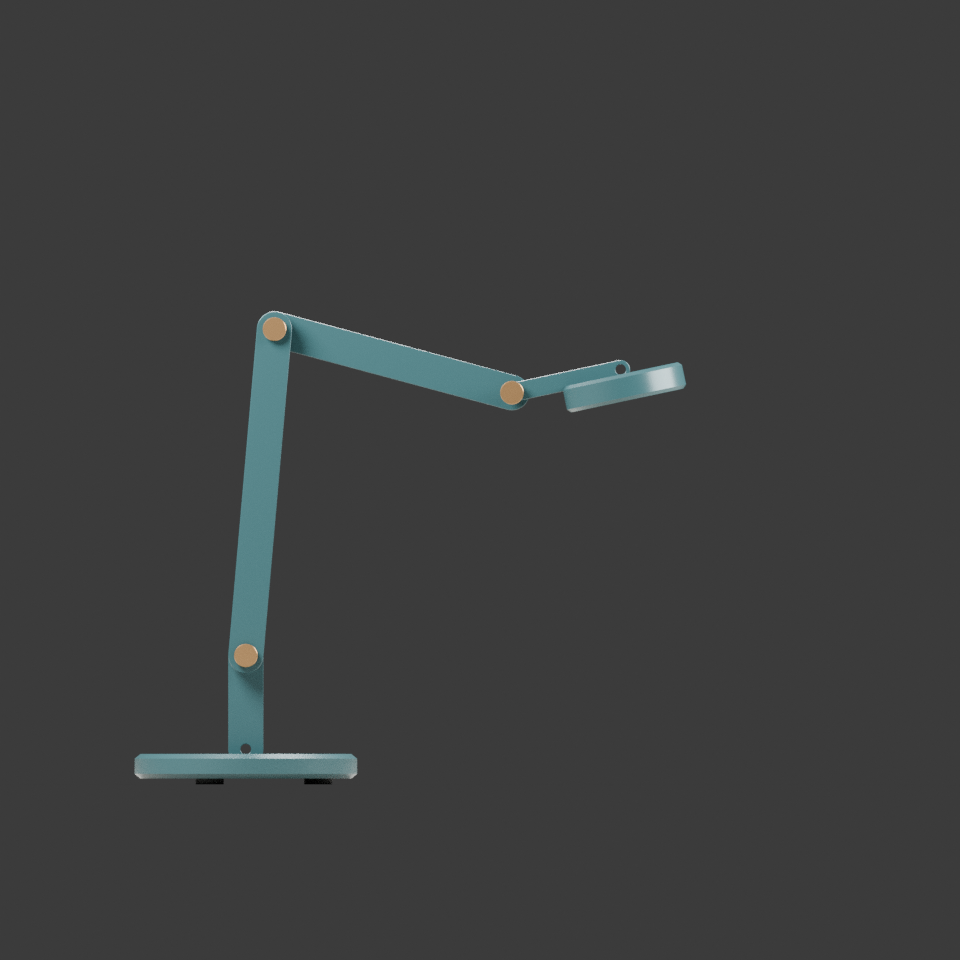
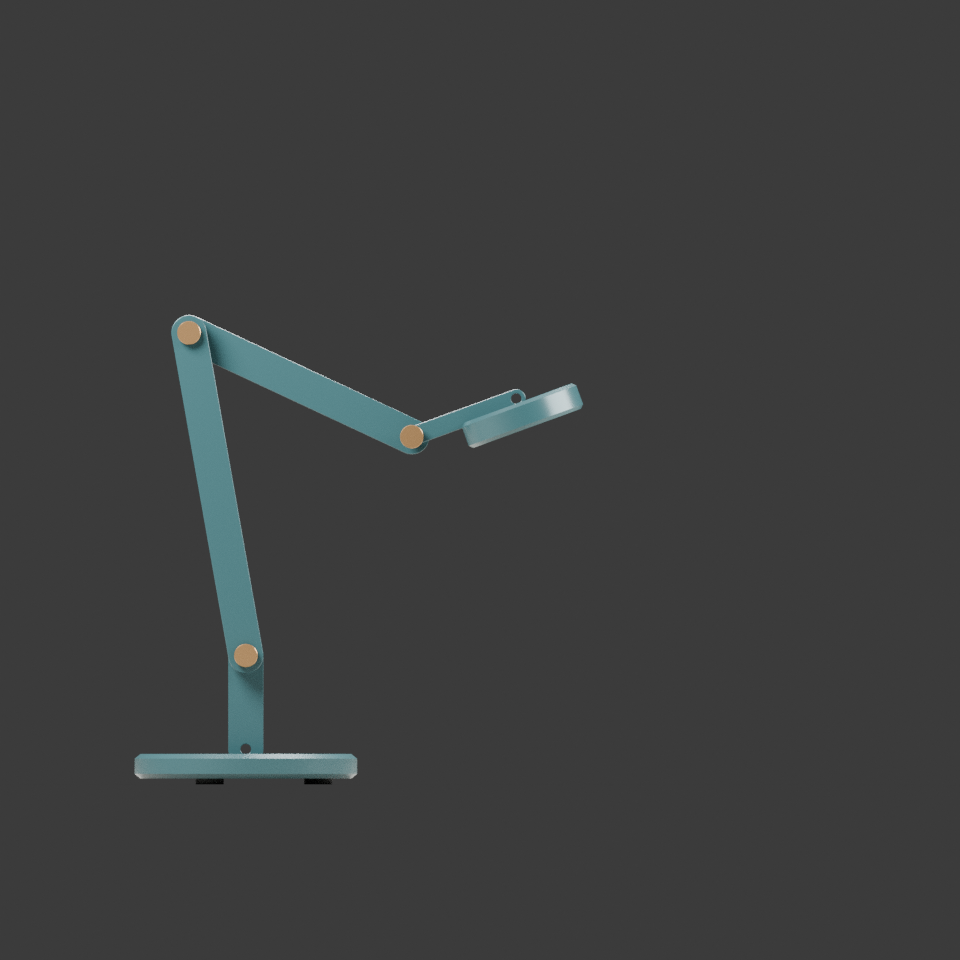
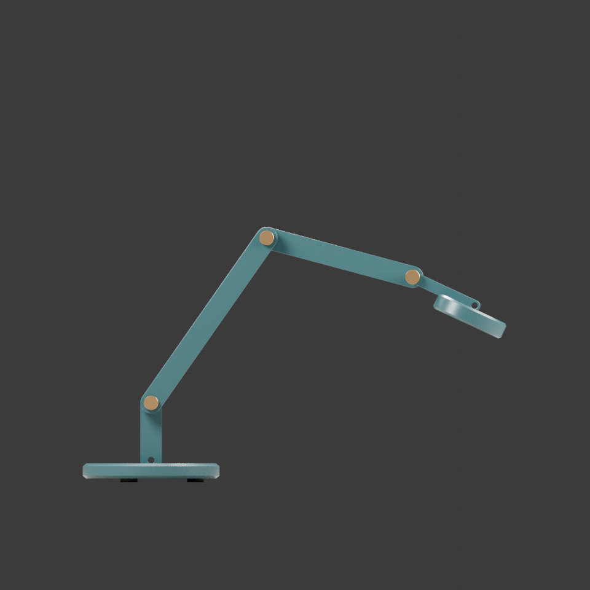

HINGE
折光
- 下臂 / 上臂
- 235 / 245 mm
- 底座直径
- Ø 210 mm
- 灯头直径
- Ø 130 mm
相机与摄影尺度固定。比较的是几何比例，不代表照明覆盖或抗倾覆性能。
HINGE / 折光
三种比例，九个真实姿态样本。
同机位对照，不以美图代替验证。
FORM / 比例
下臂、上臂、底座和灯头共同定义几何变体。数值是生成输入，不是受力或照明指标。
HINGE
相机与摄影尺度固定。比较的是几何比例，不代表照明覆盖或抗倾覆性能。
REACH
相机与摄影尺度固定。比较的是几何比例，不代表照明覆盖或抗倾覆性能。
POISE
相机与摄影尺度固定。比较的是几何比例，不代表照明覆盖或抗倾覆性能。
DETAIL / 接点
模型的相邻构件需要局部检查。一个合法铰接不能成为整对构件穿插的通行证。图中的间隙与装配关系属于几何研究，不代表轴承、公差或耐久测试。
打开接点原图 ↗
POSE ATLAS / 有限样本
肩角和灯头角以世界 x 轴为参考；肘角相对下臂。x 为水平、z 为高度，原点与模型一致。灯头中心坐标不等于灯具的外包尺寸，更不是最大伸展范围。这里只切换离散渲染，不提供已验实时动画。
肩 76° · 相对肘 -108° · 灯头世界角 -8°
灯头中心 x / z：356.5 / 179.1 mm
GLB 模型 · 原生 BLEND
肩 100° · 相对肘 -125° · 灯头世界角 20°
灯头中心 x / z：276.0 / 255.3 mm
GLB 模型 · 原生 BLEND
肩 55° · 相对肘 -70° · 灯头世界角 -25°
灯头中心 x / z：450.8 / 184.4 mm
GLB 模型 · 原生 BLEND
肩 70° · 相对肘 -95° · 灯头世界角 -5°
灯头中心 x / z：421.7 / 158.0 mm
GLB 模型 · 原生 BLEND
肩 100° · 相对肘 -125° · 灯头世界角 20°
灯头中心 x / z：317.4 / 208.9 mm
GLB 模型 · 原生 BLEND
肩 55° · 相对肘 -70° · 灯头世界角 -25°
灯头中心 x / z：472.2 / 149.5 mm
GLB 模型 · 原生 BLEND
肩 85° · 相对肘 -100° · 灯头世界角 12°
灯头中心 x / z：323.5 / 338.7 mm
GLB 模型 · 原生 BLEND
肩 100° · 相对肘 -125° · 灯头世界角 20°
灯头中心 x / z：236.4 / 314.5 mm
GLB 模型 · 原生 BLEND
肩 55° · 相对肘 -70° · 灯头世界角 -25°
灯头中心 x / z：442.8 / 230.4 mm
GLB 模型 · 原生 BLENDEVIDENCE / 结论的边界
三种几何与九个摄影姿态、角度和参数。实际图与数值一起提交；读取失败时保留上一组完整结果。
几何门禁、实际GLB导出一致性与运动样本的覆盖是不同证据。请查原始报告，不把有限采样推广为连续角度范围保证。
真实GPU渲染和闪烁、实体手机、负载平衡、抗倾覆、照度、电气安全和制造公差。本作不是可投入使用的灯具设计。
REPRODUCE / 复现与复盘
原模型包全量保留在 model/，原件字节不变。正式源包另随造物手记归档交付；下面提供可直接读取的输入、脚本与检查入口。